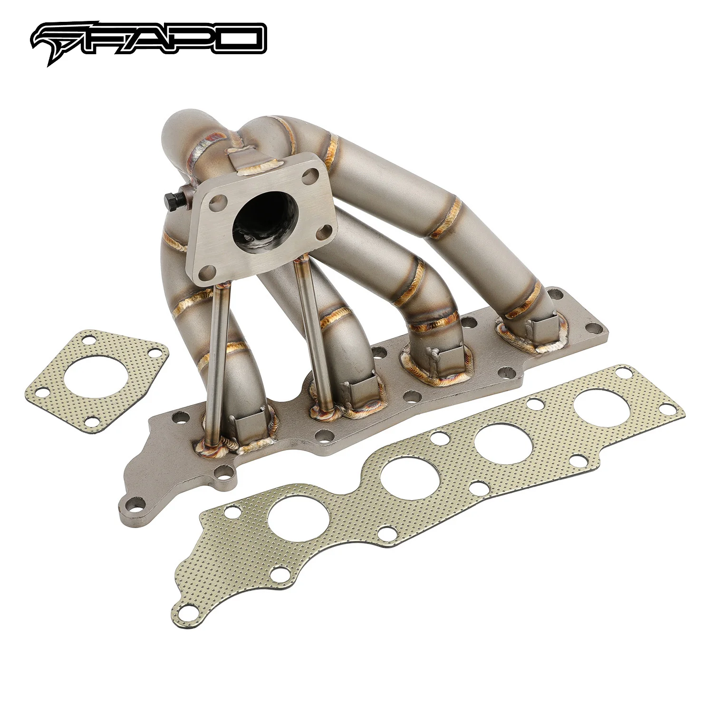

1 / 8Kolektor turbosprężarka Kompatybilne z Mazdaspeed 3 Mazdaspeed 6 Mazda CX-7 Mazda 6 2.3L MZR DISI MPS FE625120
Zastosowanie: Silnik Mazdaspeed i Mazda 3/6/CX-7 2,3L MZR DISI MPS 2006-2007 Mazdaspeed 6 2.3 z turbodoładowaniem 2007-2013 Mazdaspeed 3 2.3 z turbodoładowaniem 2007-2011 Mazda CX-7 2.3 z turbodoładowaniem Cechy produktu: Pasuje do kołnierza Turbo K04 Doskonała jakość i trwałość poprawiająca osiągi pojazdu Kolektor Turbo o równej długości w stylu Ram zapewnia szybszą szpulę turbo i lepszą reakcję przepustnicy Płaski…
Application: Mazdaspeed & Mazda 3/6/CX-7 2.3L MZR DISI MPS engine 2006-2007 Mazdaspeed 6 2.3 Turbocharged 2007-2013 Mazdaspeed 3 2.3 Turbocharged 2007-2011 Mazda CX-7 2.3 Turbocharged Features: Fits K04 Turbo Flange Excellent quality and durability to improve vehicle performance Ram Style Equal Length Turbo Manifold for faster turbo spool and better throttle response Flat 4-hole engine flanges, precisely shaped for better installation fit Tubular manifold design improves exhaust flow and delivers more top-end power Equal length runners for balanced exhaust reversion and enhanced turbo performance Precision aligned tubes made of schedule 40 cast 304 stainless steel Head flanges laser-cut from high-quality 1/2 in. thick steel plates Flange flattened by hydraulic press for precise, leak-free sealing Golden color TIG brass-style welds to prevent cracking and wear Flanges chrome-plated for corrosion resistance Sandblasted surface for extra hardness Accessories shown in photos included 1-year warranty for manufacturing defects Technical Specifications: Manifold Type: Tubular Turbo Manifold Runner Diameter: 1-3/4 in. (45 mm) Runner Layout: Equal Length Turbo Fitment: T3, T3/T4 Hybrid Turbo Mount Position: Low/Bottom Mount Wastegate Fitment: 44 mm (V-band) Head Flange Thickness: 1/2 in. (13.5 mm) Pipe Thickness: Schedule 40 (3 mm) Material: 304 Stainless Steel Finish: Sandblasted
1899,99 PLN
Opis produktu
Zastosowanie:
- Silnik Mazdaspeed i Mazda 3/6/CX-7 2,3L MZR DISI MPS
- 2006-2007 Mazdaspeed 6 2.3 z turbodoładowaniem
- 2007-2013 Mazdaspeed 3 2.3 z turbodoładowaniem
- 2007-2011 Mazda CX-7 2.3 z turbodoładowaniem
Cechy produktu:
- Pasuje do kołnierza Turbo K04
- Doskonała jakość i trwałość poprawiająca osiągi pojazdu
- Kolektor Turbo o równej długości w stylu Ram zapewnia szybszą szpulę turbo i lepszą reakcję przepustnicy
- Płaskie kołnierze silnika z 4 otworami, precyzyjnie ukształtowane dla lepszego dopasowania montażowego
- Konstrukcja kolektora rurowego poprawia przepływ spalin i zapewnia większą moc najwyższej klasy
- Prowadnice o równej długości zapewniają zrównoważone cofanie wydechu i lepszą wydajność turbosprężarki
- Precyzyjnie wyrównane rury wykonane ze stali nierdzewnej 304 typu Schedule 40
- Kołnierze głowicy wycinane laserowo z wysokiej jakości blach stalowych o grubości 1/2 cala
- Kołnierz spłaszczony za pomocą prasy hydraulicznej dla precyzyjnego, szczelnego uszczelnienia
- Spoiny mosiężne TIG w kolorze złotym, zapobiegające pękaniu i zużyciu
- Kołnierze chromowane, co zapewnia odporność na korozję
- Piaskowana powierzchnia dla dodatkowej twardości
- W zestawie akcesoria widoczne na zdjęciach
- 1 rok gwarancji na wady produkcyjne
Dane techniczne:
- Typ kolektora: Rurowy kolektor Turbo
- Średnica prowadnicy: 1-3/4 cala (45 mm)
- Układ prowadnicy: równa długość
- Montaż Turbo: T3, T3/T4 Hybrid
- Pozycja mocowania Turbo: mocowanie niskie/dolne
- Montaż Wastegate: 44 mm (pasek V)
- Grubość kołnierza głowicy: 1/2 cala (13,5 mm)
- Grubość rury: Harmonogram 40 (3 mm)
- Materiał: stal nierdzewna 304
- Wykończenie: piaskowane
Application:
- Mazdaspeed & Mazda 3/6/CX-7 2.3L MZR DISI MPS engine
- 2006-2007 Mazdaspeed 6 2.3 Turbocharged
- 2007-2013 Mazdaspeed 3 2.3 Turbocharged
- 2007-2011 Mazda CX-7 2.3 Turbocharged
Features:
- Fits K04 Turbo Flange
- Excellent quality and durability to improve vehicle performance
- Ram Style Equal Length Turbo Manifold for faster turbo spool and better throttle response
- Flat 4-hole engine flanges, precisely shaped for better installation fit
- Tubular manifold design improves exhaust flow and delivers more top-end power
- Equal length runners for balanced exhaust reversion and enhanced turbo performance
- Precision aligned tubes made of schedule 40 cast 304 stainless steel
- Head flanges laser-cut from high-quality 1/2 in. thick steel plates
- Flange flattened by hydraulic press for precise, leak-free sealing
- Golden color TIG brass-style welds to prevent cracking and wear
- Flanges chrome-plated for corrosion resistance
- Sandblasted surface for extra hardness
- Accessories shown in photos included
- 1-year warranty for manufacturing defects
Technical Specifications:
- Manifold Type: Tubular Turbo Manifold
- Runner Diameter: 1-3/4 in. (45 mm)
- Runner Layout: Equal Length
- Turbo Fitment: T3, T3/T4 Hybrid
- Turbo Mount Position: Low/Bottom Mount
- Wastegate Fitment: 44 mm (V-band)
- Head Flange Thickness: 1/2 in. (13.5 mm)
- Pipe Thickness: Schedule 40 (3 mm)
- Material: 304 Stainless Steel
- Finish: Sandblasted
FAPO Polska
Ten produkt obsługujemy lokalnie
Autoryzowana obsługa
FAPO Polska prowadzi katalog, kontakt i zamówienia bez odsyłania klienta do zewnętrznych sklepów.
Dobór po aucie
Sprawdzamy dopasowanie produktu do pojazdu, rocznika i wersji przed finalizacją zamówienia.
Wsparcie po zakupie
Masz kontakt w Polsce w sprawach zamówień, wysyłki, gwarancji i zwrotów.